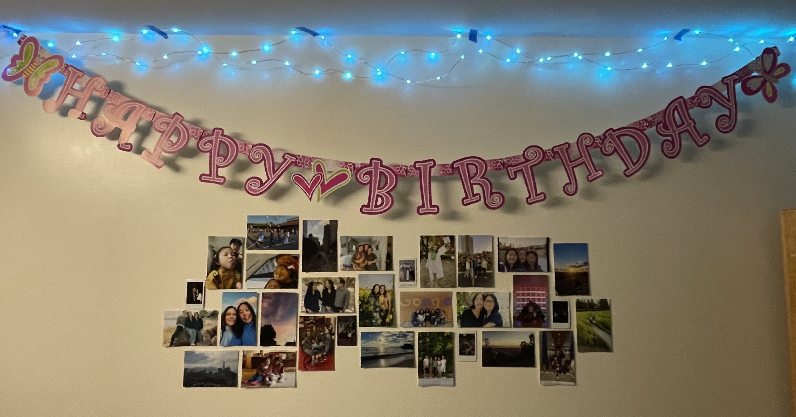

I have this Doctor Plague Bird that I bought from the Squishables stall at the Union Square Holiday Market!! I went because it was a fun place to visit and make fun of the weird stuff people sell there and I saw this bird and thought it was actually really cute. It was pricy, like everything else sold there, but it made me happy. It's just a little stuffed bird plush, but it's very important to me because it is the first purchase I made for myself in NYC that wasn't a food/lifestyle item. Later on, I also found out that Florence Pugh went to the exact same squishables stand in the Union Square Holiday Market which was extra exciting!!
Happy Birthday Banner
×Ever since I was little, my family has had this pink "Happy Birthday" banner that we hang up somewhere in the house for each of our birthdays. Whether it is hung up in the background of my birthday photo or just hung up across the wall, this banner has been in my life for a long time. This year, since I am in New York City away from home, my parents sent me the banner to hang up in my dorm room here. Of course it isn't the same, but it was nice to have something familiar hanging up in my room during my birthday.

Mug
×When I went on vacation to San Diego, the condo we stayed at didn’t have enough mugs. So, I went in search of one to use for my weeklong trip and that I really liked and was functional in price, size, shape and color. I found this mug at a Dunkin’ Donuts store on clearance because it was a holiday edition cup being sold during the summer. I brought the mug home with me and I love to use it because it reminds me of the wonderful memories from that trip.